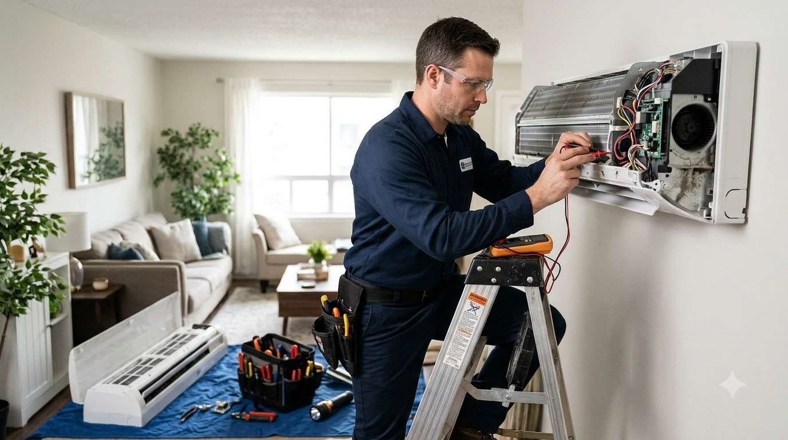

Category A • Diagnostics & Repair
AC Repair & Troubleshooting
Systematic diagnostic testing for air conditioners exhibiting reduced cooling output, startup failure, noisy operation, or unusual vibrations. Our technicians perform structured indoor and outdoor unit inspections to identify mechanical, electrical, or airflow blockages.
Common Requirement: Sudden inability to reach the set temperature or dripping water during humid summer days.